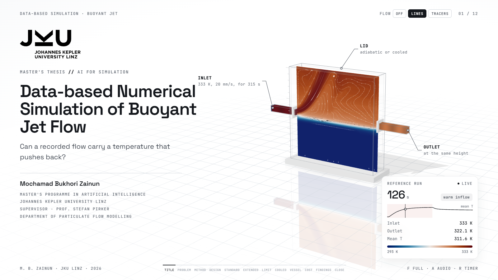
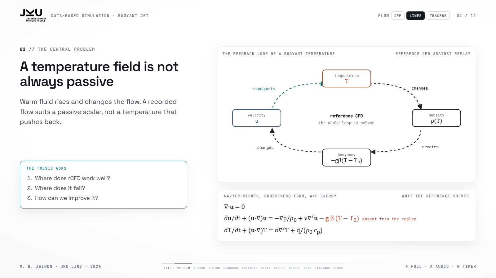
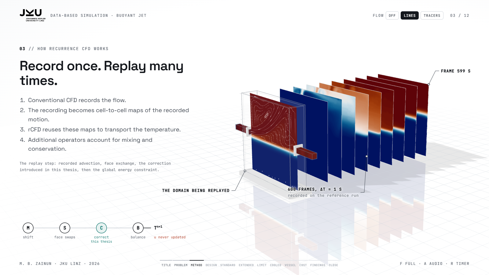
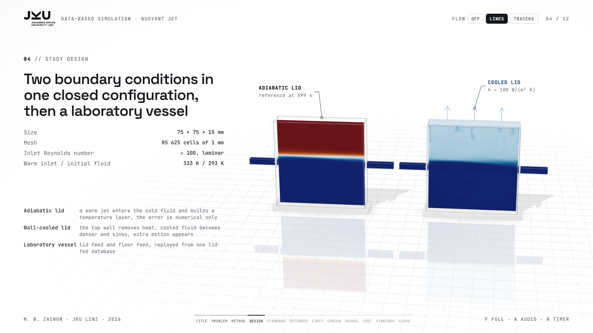
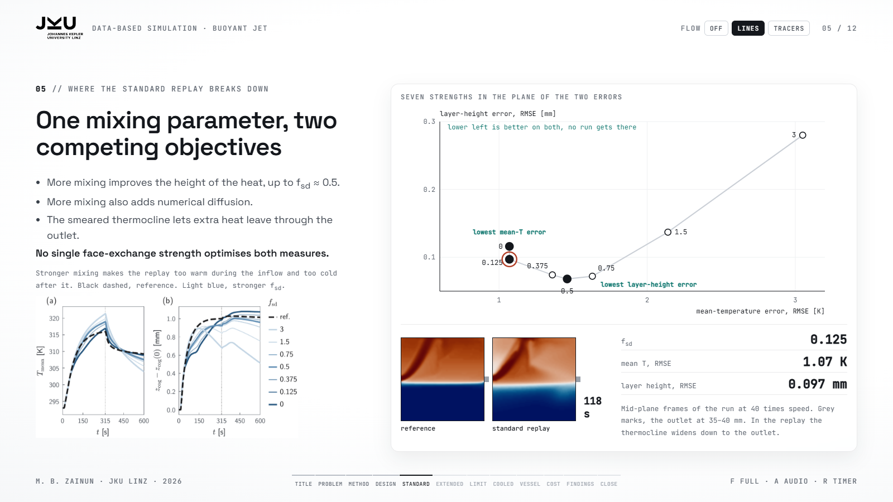
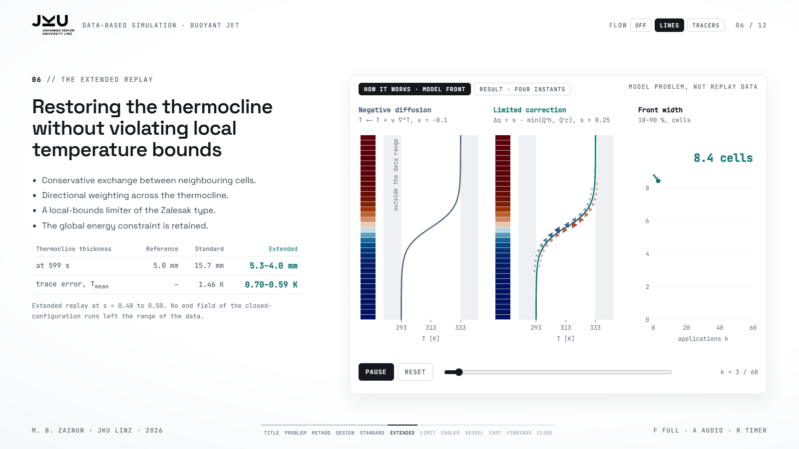
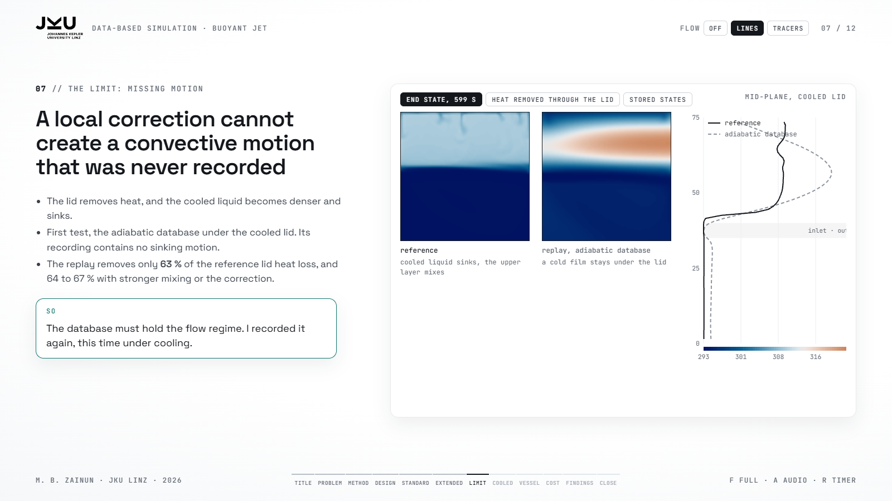
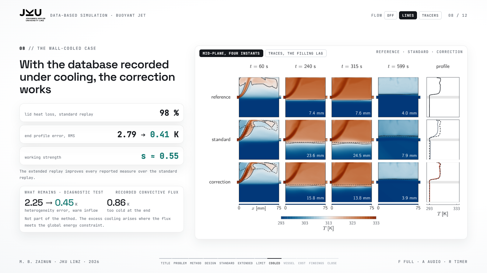
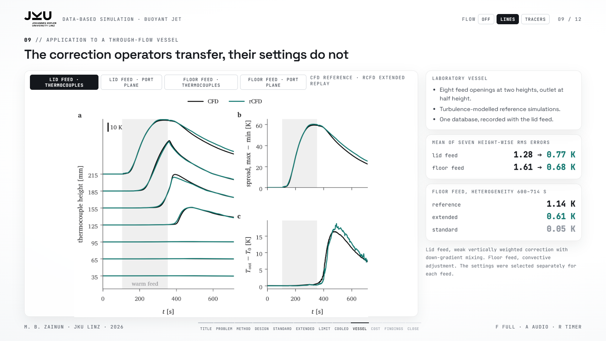
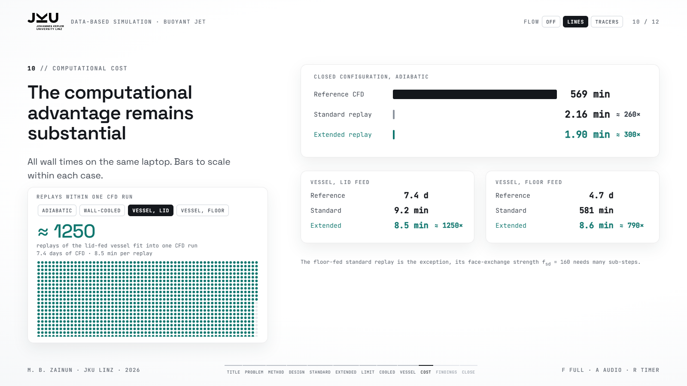

Thesis defense: Data-based Numerical Simulation of Buoyant Jet Flow
open the deck · PDF guide · 1768 words
Whole talk
Slide 1 · Introduction0:30

Good morning, and thank you for being here.
My name is Mochamad Bukhori Zainun, and today I will present my master's thesis, supervised by Professor Stefan Pirker, called Data-based Numerical Simulation of Buoyant Jet Flow.
This thesis studies whether a recorded flow can carry a temperature that pushes back on the flow.
I will first explain the problem and the method, then show three cases, and finish with the cost and the main findings.
- Greeting: Good morning.
- Name: Mochamad Bukhori Zainun.
- Supervisor: Prof. Stefan Pirker.
- Title: Data-based Numerical Simulation.
- Topic: a recorded flow carrying a temperature that pushes back.
- Route: problem, method, three cases, cost, findings.
Slide 2 · The Central Problem1:10

In conventional CFD, temperature and velocity affect each other.
Warm water is lighter, so it rises. This buoyancy changes the velocity, and the new velocity transports the temperature again. The buoyancy term in the momentum equation closes this loop.
To make the simulation faster, Recurrence CFD, or rCFD, skips the momentum equations and reuses a recorded flow. This works well when the temperature is a passive scalar, so when it does not act back on the flow. In my cases, it is not passive. The temperature drives the flow, and the recorded motion may no longer represent it.
Therefore, my thesis looks at three things: where rCFD works well, where it fails, and how it can be improved.
- Coupling: temperature and velocity affect each other.
- Warm is light, rises, changes velocity, carries T again.
- Buoyancy term closes the loop.
- rCFD: recorded flow, fine for a passive scalar.
- My cases: non-passive, T drives the flow.
- Thesis: where it works, where it fails, how to improve.
Slide 3 · How Recurrence CFD Works1:15

Let me briefly explain the method.
First, we run a normal CFD simulation and record how the fluid moves between cells. This motion is stored in cell-to-cell maps.
During the replay, these maps transport the temperature without solving the momentum equations again.
However, the recorded maps do not capture all the mixing. Therefore, the standard method adds face exchange between neighbouring cells. Then, global conservation corrects the total energy balance.
In my thesis, I add one more correction step between face exchange and global conservation. This step reduces numerical diffusion and keeps the temperature within local limits.
This is the main idea of my method. To test it, I first needed a case where the errors can be separated.
- Record: normal CFD, fluid motion between cells.
- Cell-to-cell maps: replay without momentum equations.
- Face exchange: adds the missing mixing.
- Global conservation: total energy balance.
- My step: correction between face exchange and conservation.
- Goal: less numerical diffusion, temperature within local limits.
Slide 4 · Study Design1:15

I started with a small numerical setup.
The size is 75 by 75 by 15 millimetres, with 85,625 cells. Each cell is one millimetre in size.
The reference simulation needs 569 minutes, about nine and a half hours on a laptop, so it is small enough to run many replays against it.
The inlet Reynolds number is around 100, so the flow is laminar. This helps us study the replay errors without adding turbulence as another problem.
I tested two boundary conditions. First, the adiabatic case. A warm jet enters the cold fluid and creates a temperature layer.
Second, the wall-cooled case. The top wall removes heat. The fluid becomes colder and denser, so it sinks and creates additional motion.
By comparing these two cases, we can separate numerical errors from errors caused by missing motion.
Finally, I tested the correction methods in a laboratory vessel.
- Small setup: 75 × 75 × 15 mm, 85,625 cells of 1 mm.
- Re ≈ 100: laminar, no turbulence model.
- Adiabatic lid: warm jet builds a temperature layer.
- Wall-cooled lid: cold fluid sinks, extra motion.
- Comparison: numerical error vs missing motion.
- Then: laboratory vessel.
Slide 5 · Where the Standard Replay Breaks Down1:30

Now, let us look at the standard replay.
The first problem is numerical diffusion. It makes the thermocline much thicker than in the reference simulation.
This is not only a visual problem. It also changes the energy distribution and the heat leaving the system.
The outlet is located just below the thermocline. Because of numerical diffusion, warm fluid spreads across this boundary. As a result, the outlet removes heat from the wrong region.
With recorded advection alone, the thermocline stays as thin as in the reference. So the extra thickness comes from face exchange. At a mixing strength of 0.5 it acts like a diffusivity ten times the molecular value. I tested seven different mixing strengths. On the right, each point is one strength in the plane of the two errors, and the results show a clear trade-off.
The mean-temperature RMSE is lowest at 1.07 kelvin, with little or no extra mixing. However, the centre-of-gravity error is lowest at a mixing strength of around 0.5.
So, increasing the mixing improves one measure but makes the other worse.
This means that the standard replay has no single best mixing parameter. This answers my first research question.
- Problem: numerical diffusion.
- Source: face exchange, about ten times the molecular diffusivity at 0.5.
- Effect: thermocline becomes too thick.
- Outlet: below the thermocline, removes heat from the wrong region.
- Seven tests: different mixing strengths.
- Trade-off: RMSE best at 1.07 K, centre-of-gravity error best near 0.5.
- Conclusion: no single best mixing parameter.
Slide 6 · The Extended Replay1:35

To solve this problem, I developed an additional correction step.
The idea is to move heat back across the thermocline in a controlled way. In the reference, the stable stratification suppresses vertical motion across the thermocline, with a buoyancy frequency of 5.8 per second, so a sharp layer is physical and worth restoring.
This correction has three important features. First, it is conservative. This means that the total energy of two neighbouring cells stays the same after the exchange.
Second, it is directionally weighted. It mainly corrects heat transfer across the thermocline, instead of treating all cell faces equally.
Third, it uses a local-bounds limiter. This prevents the corrected temperature from going outside the range of the neighbouring data.
The results are promising. The reference thermocline is about 5 millimetres thick. The standard replay produces 15.7 millimetres. With my correction, the thickness is 5.3 millimetres at s equal to 0.40 and 4.0 millimetres at 0.50, so the working range brackets the reference.
The trace error decreases from 1.46 kelvin to 0.70 and 0.59 kelvin.
Importantly, in the closed-configuration runs, the correction does not produce temperatures outside the data range.
This answers my second research question.
- Correction: move heat back across the thermocline.
- Physics: stable stratification, N = 5.8 per second, a sharp layer is real.
- Conservative: energy of two neighbouring cells stays the same.
- Directional: mainly corrects across the thermocline.
- Local bounds: temperature stays in the neighbouring data range.
- Results: 15.7 mm → 5.3 mm (s = 0.40) and 4.0 mm (s = 0.50), trace error 1.46 → 0.70 and 0.59 K.
- Conclusion: answers research question 2.
Slide 7 · The Limit: Missing Motion1:20

Next, I applied the method to the wall-cooled case.
Here, the lid removes heat from the fluid. The cooled fluid becomes denser and sinks. This creates additional motion above the thermocline.
In the first test, I used the adiabatic database for the wall-cooled case. The replay can still remove heat through the lid. However, the reference flow has cold fluid moving downward. This motion is missing from the adiabatic database.
As a result, the replay captures only 63 per cent of the heat lost through the lid. Stronger mixing or the correction increases this only to 64 to 67 per cent. The stored states show the same over time. With the adiabatic database, the replay stays too warm, while the database recorded under cooling follows the reference closely.
This leads to the main limitation of the method. A local correction cannot create motion that was never recorded. The database must hold the flow regime, so I recorded it again, this time under cooling.
- Wall cooling: lid removes heat, cold fluid sinks.
- First test: adiabatic database used for wall-cooled flow.
- Missing motion: cold fluid should move downward.
- Heat loss: 63 %, only 64–67 % with stronger mixing or correction.
- Stored states: adiabatic database too warm, cooled database follows CFD.
- Conclusion: correction cannot create motion that was never recorded.
- Bridge: record the database again under cooling.
Slide 8 · The Wall-Cooled Case1:35

With the database recorded under the same wall-cooled condition, the standard replay captures about 98 per cent of the heat lost through the lid. However, this does not mean that the temperature field is correct.
The thermocline is still too diffuse, and the heat distribution is different from the reference. The error in the final centre-line temperature profile is 2.79 kelvin.
With the correction, all reported measures improve. The final profile error decreases to 0.41 kelvin. The selected correction strength is around 0.55. This is slightly above the guaranteed bound of one half, so the final clamp can become active.
One error still remains. Even with this database, the replayed layers separate too slowly during warm inflow. In a diagnostic test, I added the recorded convective heat flux from the reference. This is only a diagnostic test, not part of my proposed method.
The heterogeneity error decreases from 2.25 to 0.45 kelvin. However, the final temperature becomes 0.86 kelvin too cold. This happens because the recorded heat flux interacts with the global energy constraint.
- Same database: recorded under wall-cooled conditions.
- Standard replay: 98 % heat loss, temperature field still inaccurate.
- Correction: error 2.79 K → 0.41 K, s ≈ 0.55, just above the bound 1/2.
- Remaining: layers separate too slowly during inflow.
- Diagnostic flux: heterogeneity 2.25 → 0.45 K, end 0.86 K too cold.
Slide 9 · Application to a Through-Flow Vessel1:30

Finally, I tested the correction methods in a different geometry, a through-flow vessel based on a laboratory setup.
The vessel has eight feed openings at two different heights and one outlet at half height. The reference simulations use a turbulence model.
The important point is that I used only one database. It was recorded during the lid-fed case. I then tested two configurations, lid-fed and floor-fed.
Compared with their reference simulations, the extended replay gives better results in both cases. For the lid-fed case, the mean RMS error decreases from 1.28 to 0.77 kelvin. For the floor-fed case, it decreases from 1.61 to 0.68 kelvin.
However, the two cases need different correction settings. The lid-fed case needs a weak correction with down-gradient mixing under the lid. The floor-fed case needs convective adjustment, because warm fluid enters below the colder fluid. Unlike the anti-diffusive correction, this adjustment is not bounded by construction.
This means that the correction methods can be transferred to a new configuration, but their settings must be adjusted.
Also, the floor-fed replay still cannot reproduce motion that is missing from the lid-fed database.
On the sensor curves, CFD is the reference simulation and rCFD is the extended replay. The curves still agree, because each sensor gives one temperature per height and the correction keeps warm water above cold water. The port-plane montage shows the difference. In the reference, the warm floor feed rises along the wall. In the replay, it follows the recorded path, along the floor and up the axis. So the replay gets the layering right, but not the path.
- New geometry: through-flow vessel.
- Structure: eight feed openings, two heights, outlet at half height.
- One database: recorded from the lid-fed case.
- Two tests: lid-fed and floor-fed.
- Improved: 1.28 → 0.77 K and 1.61 → 0.68 K.
- Different settings: weak correction (lid), convective adjustment (floor, not bounded).
- Limitation: cannot reproduce motion missing from the database.
- Curves agree, fields differ: layering right, path wrong.
Slide 10 · Computational Cost0:55

Besides accuracy, computational cost is also important.
In the adiabatic closed case, the reference simulation took 569 minutes. The standard replay took only 2.16 minutes. The extended replay took about 1.9 minutes.
This means that the standard replay is about 260 times faster. The extended replay is about 300 times faster.
So, the correction keeps the main speed advantage of recurrence CFD. In the vessel, a replay took about eight and a half minutes, against 7.4 and 4.7 days for the reference simulations. These reference times include rendering at every step, so the vessel ratios are upper estimates.
However, this advantage applies to repeated replays. We still need one conventional CFD simulation to create the database.
- Computational cost: selain akurasi, waktu penting.
- Reference: 569 min.
- Standard replay: 2.16 min, about 260×.
- Vessel: 8.5 min against 7.4 and 4.7 days, upper estimates.
- Extended replay: 1.9 min, about 300×.
- Conclusion: still fast, database needs one CFD run.
Slide 11 · Contributions and Limitations1:10
To summarise, this thesis has five main findings.
First, the standard replay has a trade-off between energy retention and temperature stratification.
Second, my correction reduces numerical diffusion while keeping the temperature within local limits.
Third, the database must represent the correct flow regime.
Fourth, local corrections cannot replace motion that is missing from the database.
Fifth, the correction methods can be used in other configurations, but their settings must be adjusted.
There are also some limitations. The method still depends on the recorded motion. The correction strength is not yet selected automatically. Also, the laboratory comparison has some errors in the reference simulations themselves.
Therefore, the results show improvements compared with the numerical references, but they do not prove that the method is accurate for every situation.
- Trade-off: energy retention vs stratification.
- Correction: less diffusion, local limits respected.
- Database: must match the flow regime.
- Missing motion: not replaced by local correction.
- Transfer: works elsewhere, settings change.
- Limits: recorded motion, manual settings, reference errors.
Slide 12 · Conclusion0:45
So, a recorded flow can carry a temperature that also changes the flow, but only under certain conditions.
The correction removes the numerical part of the error. The recorded database decides the physical part.
This is the main finding of my thesis. The accuracy of recurrence CFD depends not only on how we correct the replay, but also on what physical information we record.
Thank you for your attention. I will be happy to answer your questions.
- Answer: yes, under certain conditions.
- Correction: the numerical part.
- Database: the physical part.
- Final message: what we record matters as much as how we correct.
- Thank you, questions.